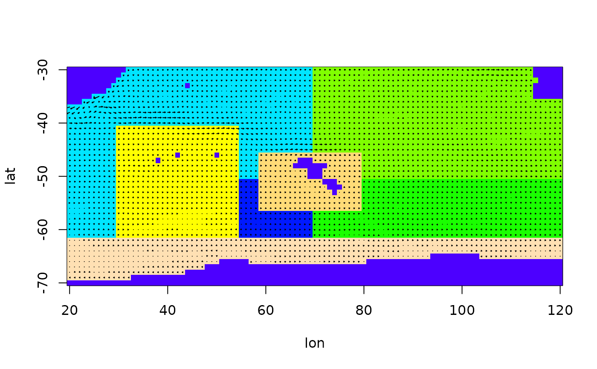
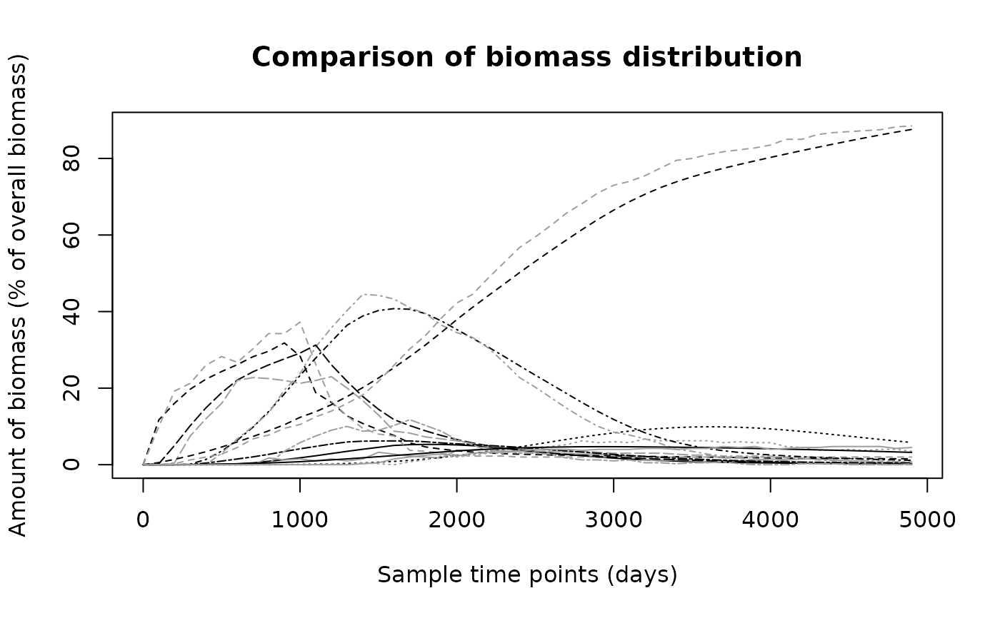

biomass.tracking.RdThis function calculates the movement of biomass between given polygons as
determined by the movement parameters. It uses the movement tensor
calculated by a numerical tracer experiment implemented by the function
particle.tracking.
biomass.tracking(mk, times, start_setup = NULL, infl_poly = 1,
infl_time = 10, insert_t_step = NULL, silent = TRUE, S = NULL)An object of class movement kernel, see details.
A vector giving the time-points at which the output is wanted.
A vector giving a starting biomass distribution. Specify either this or the next two arguments.
The biomass flows in from this polygon. Has to have positive inflow from the boundary.
The number of time steps over which the biomass is to be inserted. Only used if start\_setup==NULL.
The width of the time steps over which the biomass is to be inserted. Only used if start\_setup==NULL.
If FALSE, the movement is shown in text and graphic and the user has to hit 'enter' after every time step.
Matrix describing the polygon structure, needed if silent == FALSE.
A matrix of dimension 'number of polygons' x 'number of time steps requested'. Each column contains the biomass distribution in the respective time step.
Two different starting conditions for the flow of biomass can be given: A
starting distribution of biomass can be specified or it can flow into the
area through the specified inflow polygon over a given number of time steps.
In this case, time steps refers to the differences between the first two
entries in the times vector.
An object of class movement\_kernel is a list of the following items:
P: A list of the movement tensors for each polygon, where P[[poly]][i,j,k]
describes the probability of a particle leaving polygon poly towards
polygon j in the case that it entered from polygon i and is in
age class k. nk: A list containing the neighbours for each polygon.
This is used to translate between the local neighbourhood numbers (used in
P) to the global numbers of the polygons. no\_age\_classes: The number of
age classes used in the movement kernel. delta: Width of the age classes
used in the movement kernel. retention: Logical to indicate whether
retention in the final age class has been enabled or not.
[[poly]: R:[poly
TODO: my report
data(Udata)
data(Vdata)
data(Sdata)
arena = prepare.arena(Udata,Vdata,Sdata)
plot(arena)
# Use more particles if realistic results are needed
mk = particle.tracking(arena,400,5000,diffusion=0.6,graphics=TRUE)

# Now estimate the biomass movement
N1 = biomass.tracking(mk,seq(0,4900,by=100),infl_poly=2)
# Get a particle tracking result to compare the above to
N2 = particle.tracking.compare(arena,400,100,50,diffusion=0.6,infl_poly=2)
#> Warning: Particles left in domain after the time for particle tracking elapsed:
#> Warning: 45
# Compare the results
biomass.compare(N1,N2)

#> [1] 39.460235 2.052659